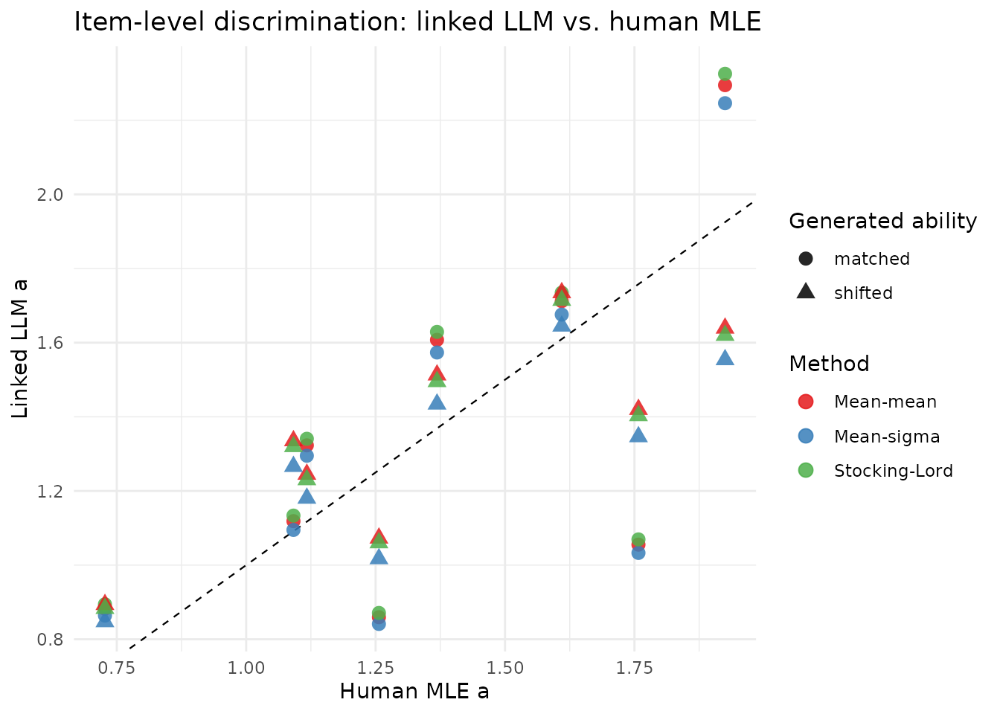
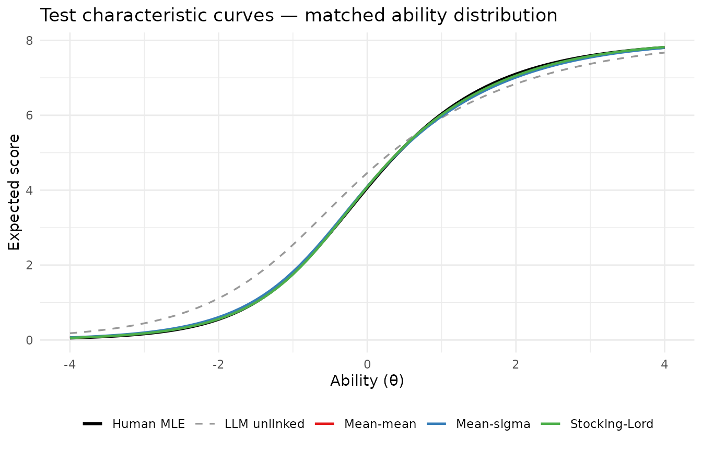
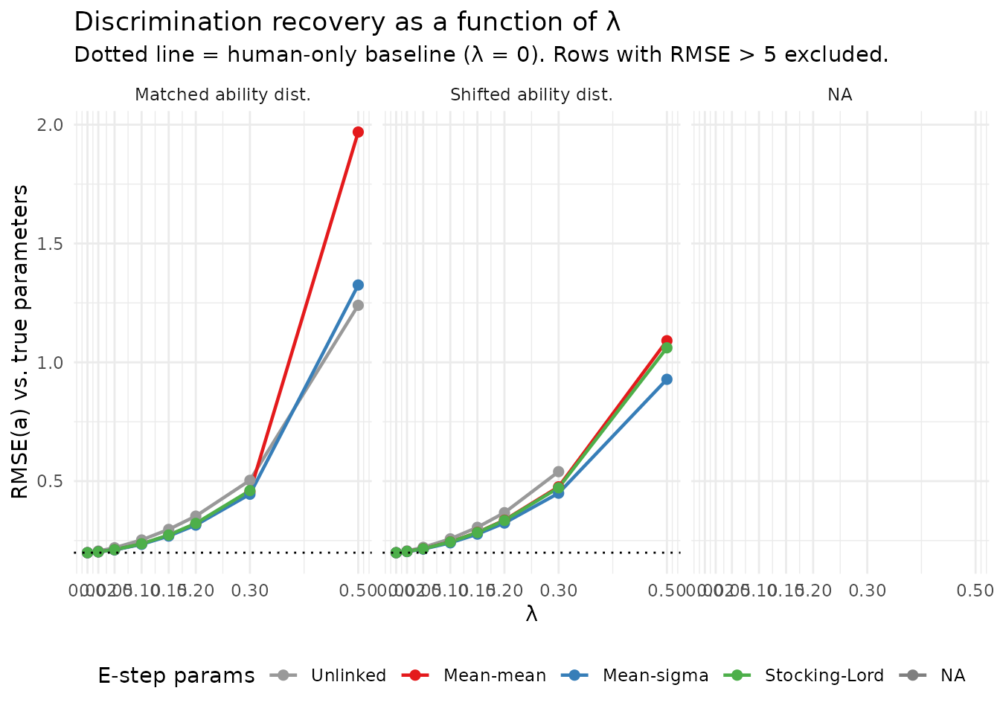

IRT Linking Methods for the Mixed-Subjects E-step
linking-comparison.RmdBackground
A key E-step decision in the mixed-subjects calibration is which item parameters to use when computing posterior quadrature weights for the LLM-generated responses. The current package implementation uses the same human-calibrated parameters for all three datasets (observed, predicted, generated), which is misspecified when the LLM has different item parameters. This misspecification creates a systematic gradient asymmetry in the combined objective — the correction gradient is consistently larger than zero because LLM-specific posteriors are more diffuse than human posteriors. The result is a false minimum in the combined loss at unrealistically large discrimination values.
The standard remedy is IRT scale linking: fit a 2PL model to the generated data, transform the LLM parameters onto the human metric, and use those linked parameters for the generated E-step. This document evaluates three classical linking methods:
| Method | What is matched |
|---|---|
| Mean-mean | Mean discrimination and mean difficulty |
| Mean-sigma | Mean and SD of difficulty |
| Stocking-Lord | Numerically minimised weighted TCC squared deviation |
We characterise both how well each method aligns the LLM parameters to the human scale and — crucially — how the residual misalignment interacts with the power-tuning parameter .
Linking implementations
The transformation implies and (equivalently ).
library(mixedsubjectsirt)
library(ggplot2)
# Apply (A, B) and return a standardised data frame of item parameters.
# Guards against degenerate linking constants (Inf, NaN, non-positive A) that
# can arise from unusual mirt fits on different platforms.
apply_link <- function(source, A, B, slope_lower = 1e-4) {
if (!is.finite(A) || A <= 0 || !is.finite(B)) {
# Degenerate constants: fall back to identity transform
A <- 1
B <- 0
}
pars <- data.frame(
item = source$item,
a = pmax(slope_lower, source$a / A),
b = A * source$b + B,
stringsAsFactors = FALSE
)
# Guard b and d against any residual non-finite values
pars$b <- ifelse(is.finite(pars$b), pars$b, 0)
pars$d <- -pars$a * pars$b
list(pars = pars, A = A, B = B)
}
link_mean_mean <- function(source, target) {
A <- mean(source$a) / mean(target$a)
B <- mean(target$b) - A * mean(source$b)
apply_link(source, A, B)
}
link_mean_sigma <- function(source, target) {
sd_src <- sd(source$b)
# If source difficulties have no variance (degenerate mirt fit), fall back
# to mean-mean linking which does not depend on sd(b).
if (!is.finite(sd_src) || sd_src < 1e-6) {
return(link_mean_mean(source, target))
}
A <- sd(target$b) / sd_src
B <- mean(target$b) - A * mean(source$b)
apply_link(source, A, B)
}
# Stocking-Lord with bounded optimisation to prevent item-level overcorrection.
# A is constrained to [0.4, 2.5]; large-variance items can otherwise receive
# inflated linked discriminations that destabilise the downstream M-step.
link_stocking_lord <- function(source, target,
theta_grid = seq(-4, 4, by = 0.05),
A_bounds = c(0.4, 2.5),
B_bounds = c(-4, 4)) {
w <- dnorm(theta_grid) / sum(dnorm(theta_grid))
tcc <- function(pars, theta) {
eta <- outer(theta, pars$a, `*`) +
matrix(pars$d, nrow = length(theta), ncol = nrow(pars), byrow = TRUE)
rowSums(plogis(eta))
}
tcc_target <- tcc(target, theta_grid)
criterion <- function(params) {
A <- exp(params[1])
B <- params[2]
sum(w * (tcc_target - tcc(apply_link(source, A, B)$pars, theta_grid))^2)
}
mm <- link_mean_mean(source, target)
init <- c(log(mm$A), mm$B)
# L-BFGS-B on log(A) keeps A > 0 and enforces the stated bounds
opt <- optim(
par = init,
fn = criterion,
method = "L-BFGS-B",
lower = c(log(A_bounds[1]), B_bounds[1]),
upper = c(log(A_bounds[2]), B_bounds[2]),
control = list(factr = 1e-14, maxit = 1000)
)
apply_link(source, exp(opt$par[1]), opt$par[2])
}
rmse <- function(x, y) sqrt(mean((x - y)^2))Simulation
n_human <- 400
n_generated <- 1200
n_items <- 8
true_pars <- data.frame(
item = paste0("Item", seq_len(n_items)),
a = seq(0.8, 1.6, length.out = n_items),
d = seq(-1.1, 1.1, length.out = n_items)
)
true_pars$b <- -true_pars$d / true_pars$a
# Human responses
theta_human <- rnorm(n_human)
observed <- simulate_2pl(theta_human, true_pars)
# LLM: ~10% attenuated discrimination per item, +0.25 logit intercept shift
llm_pars_true <- true_pars
llm_pars_true$a <- pmax(0.4, 0.9 * true_pars$a + rnorm(n_items, 0, 0.05))
llm_pars_true$d <- true_pars$d + 0.25 + rnorm(n_items, 0, 0.15)
llm_pars_true$b <- -llm_pars_true$d / llm_pars_true$a
# Paired predictions and two generated datasets
predicted <- simulate_2pl(theta_human, llm_pars_true)
generated_matched <- simulate_2pl(rnorm(n_generated), llm_pars_true)
generated_shifted <- simulate_2pl(rnorm(n_generated, mean = 0.2, sd = 0.9), llm_pars_true)The matched sample draws LLM subjects from the same N(0,1) ability distribution as humans. The shifted sample uses mean = 0.2, SD = 0.9, representing a higher-ability, lower-variance LLM response pattern.
Fitting human and LLM models
human_pars <- fit_2pl(observed, technical = list(NCYCLES = 500))$pars
llm_raw_matched <- fit_2pl(generated_matched, technical = list(NCYCLES = 500))$pars
llm_raw_shifted <- fit_2pl(generated_shifted, technical = list(NCYCLES = 500))$pars| Source | mean(a) | sd(a) | mean(b) | sd(b) |
|---|---|---|---|---|
| True human | 1.200 | 0.280 | 0.143 | 0.715 |
| Human MLE | 1.357 | 0.393 | 0.123 | 0.708 |
| LLM true (both) | 1.077 | 0.252 | -0.093 | 0.827 |
| LLM raw (matched) | 1.079 | 0.391 | -0.046 | 0.871 |
| LLM raw (shifted) | 1.003 | 0.209 | -0.374 | 0.908 |
Note the item-level heterogeneity in the LLM parameters. The mean LLM discrimination is ~80% of the human mean, but individual items deviate from this ratio — some LLM items are close to or exceed the human estimate. This heterogeneity means scale-level linking methods cannot perfectly align every item.
Applying the three methods
methods <- c("mean_mean", "mean_sigma", "stocking_lord")
all_links <- list(
matched = list(
mean_mean = link_mean_mean (llm_raw_matched, human_pars),
mean_sigma = link_mean_sigma (llm_raw_matched, human_pars),
stocking_lord = link_stocking_lord(llm_raw_matched, human_pars)
),
shifted = list(
mean_mean = link_mean_mean (llm_raw_shifted, human_pars),
mean_sigma = link_mean_sigma (llm_raw_shifted, human_pars),
stocking_lord = link_stocking_lord(llm_raw_shifted, human_pars)
)
)
# Linking constants
const_tab <- do.call(rbind, lapply(c("matched", "shifted"), function(case) {
do.call(rbind, lapply(methods, function(m) {
data.frame(case = case, method = m,
A = round(all_links[[case]][[m]]$A, 4),
B = round(all_links[[case]][[m]]$B, 4))
}))
}))
knitr::kable(const_tab, row.names = FALSE,
caption = "Linking constants (A, B)")| case | method | A | B |
|---|---|---|---|
| matched | mean_mean | 0.7951 | 0.1592 |
| matched | mean_sigma | 0.8123 | 0.1600 |
| matched | stocking_lord | 0.7846 | 0.1585 |
| shifted | mean_mean | 0.7392 | 0.3993 |
| shifted | mean_sigma | 0.7797 | 0.4144 |
| shifted | stocking_lord | 0.7481 | 0.3741 |
Parameter alignment after linking
param_tab <- do.call(rbind, lapply(c("matched", "shifted"), function(case) {
do.call(rbind, lapply(methods, function(m) {
lp <- all_links[[case]][[m]]$pars
data.frame(
case = case, method = m,
rmse_a = round(rmse(lp$a, human_pars$a), 4),
rmse_b = round(rmse(lp$b, human_pars$b), 4),
max_da = round(max(abs(lp$a - human_pars$a)), 4),
max_db = round(max(abs(lp$b - human_pars$b)), 4)
)
}))
}))
knitr::kable(param_tab, row.names = FALSE,
col.names = c("Case", "Method", "RMSE(a)", "RMSE(b)", "max|Δa|", "max|Δb|"),
caption = "Discrepancy between linked LLM parameters and human MLE")| Case | Method | RMSE(a) | RMSE(b) | max|Δa| | max|Δb| |
|---|---|---|---|---|---|
| matched | mean_mean | 0.3395 | 0.2262 | 0.7025 | 0.3936 |
| matched | mean_sigma | 0.3349 | 0.2282 | 0.7248 | 0.4134 |
| matched | stocking_lord | 0.3438 | 0.2254 | 0.6884 | 0.3812 |
| shifted | mean_mean | 0.2150 | 0.1481 | 0.3379 | 0.2246 |
| shifted | mean_sigma | 0.2288 | 0.1480 | 0.4116 | 0.2655 |
| shifted | stocking_lord | 0.2161 | 0.1501 | 0.3547 | 0.2392 |

Items deviating most from the 1:1 line are those where the LLM’s discrimination differs most from the human value relative to the group mean — linking cannot individually recalibrate each item.
TCC alignment
theta_seq <- seq(-4, 4, by = 0.1)
tcc_fn <- function(pars, theta) {
eta <- outer(theta, pars$a, `*`) +
matrix(pars$d, nrow = length(theta), ncol = nrow(pars), byrow = TRUE)
rowSums(plogis(eta))
}
# Only show matched case for brevity
tcc_df <- rbind(
data.frame(theta = theta_seq, tcc = tcc_fn(human_pars, theta_seq),
method = "Human MLE"),
data.frame(theta = theta_seq, tcc = tcc_fn(llm_raw_matched, theta_seq),
method = "LLM unlinked"),
do.call(rbind, lapply(methods, function(m) {
data.frame(theta = theta_seq,
tcc = tcc_fn(all_links$matched[[m]]$pars, theta_seq),
method = m)
}))
)
tcc_df$method_f <- factor(tcc_df$method,
levels = c("Human MLE","LLM unlinked","mean_mean","mean_sigma","stocking_lord"),
labels = c("Human MLE","LLM unlinked","Mean-mean","Mean-sigma","Stocking-Lord"))
ggplot(tcc_df, aes(theta, tcc, colour = method_f, linewidth = method_f,
linetype = method_f)) +
geom_line() +
scale_colour_manual(values = c(
"Human MLE"="black","LLM unlinked"="grey60",
"Mean-mean"="#E41A1C","Mean-sigma"="#377EB8","Stocking-Lord"="#4DAF4A")) +
scale_linewidth_manual(
values = c("Human MLE"=1.0,"LLM unlinked"=0.6,
"Mean-mean"=0.8,"Mean-sigma"=0.8,"Stocking-Lord"=0.8)) +
scale_linetype_manual(
values = c("Human MLE"="solid","LLM unlinked"="dashed",
"Mean-mean"="solid","Mean-sigma"="solid","Stocking-Lord"="solid")) +
labs(x = "Ability (θ)", y = "Expected score",
title = "Test characteristic curves — matched ability distribution",
colour = NULL, linewidth = NULL, linetype = NULL) +
theme_minimal(base_size = 11) + theme(legend.position = "bottom")
Gradient asymmetry: what linking fixes and what it does not
The core problem in the current (unlinked) implementation is a gradient asymmetry: for items with high human discrimination, causing the combined gradient to push upward rather than toward the true value. We examine how much linking reduces this asymmetry.
n_quad <- 11
quad <- make_quadrature(n_quad)
q_obs <- mixedsubjectsirt:::build_quadrature_summary(observed, human_pars, quad)
q_pred <- mixedsubjectsirt:::build_quadrature_summary(predicted, human_pars, quad,
weights = q_obs$weights)
gradient_analysis <- function(gen_data, linked_pars, label) {
q_gen <- mixedsubjectsirt:::build_quadrature_summary(gen_data, linked_pars, quad)
g_obs <- mixedsubjectsirt:::gradient_expected_counts(q_obs$counts, human_pars)
g_gen <- mixedsubjectsirt:::gradient_expected_counts(q_gen$counts, human_pars)
g_pred <- mixedsubjectsirt:::gradient_expected_counts(q_pred$counts, human_pars)
data.frame(
config = label,
item = human_pars$item,
grad_a_combined_0.5 = round(g_obs + 0.5 * (g_gen - g_pred), 4)[seq_len(n_items)],
g_obs = round(g_obs[seq_len(n_items)], 4),
g_gen = round(g_gen[seq_len(n_items)], 4),
g_pred = round(g_pred[seq_len(n_items)], 4)
)
}
grad_rows <- rbind(
gradient_analysis(generated_matched, human_pars, "unlinked"),
gradient_analysis(generated_matched, all_links$matched$mean_mean$pars, "mean_mean"),
gradient_analysis(generated_matched, all_links$matched$mean_sigma$pars, "mean_sigma"),
gradient_analysis(generated_matched, all_links$matched$stocking_lord$pars, "stocking_lord")
)
# Show combined gradient for Items 5 and 8 — the problem items
grad_items <- grad_rows[grad_rows$item %in% c("Item5", "Item8"),
c("config","item","g_obs","g_gen","g_pred",
"grad_a_combined_0.5")]
knitr::kable(grad_items, row.names = FALSE,
col.names = c("Config","Item","∇L_obs","∇L_gen","∇L_pred","Combined (λ=0.5)"),
caption = paste("Gradient of discrimination a for the two problematic items at",
"starting parameters. Negative combined gradient pushes a upward."))| Config | Item | ∇L_obs | ∇L_gen | ∇L_pred | Combined (λ=0.5) |
|---|---|---|---|---|---|
| unlinked | Item5 | 0.0131 | 0.0538 | 0.1767 | -0.0484 |
| unlinked | Item8 | 0.0217 | 0.0059 | 0.1653 | -0.0580 |
| mean_mean | Item5 | 0.0131 | 0.1021 | 0.1767 | -0.0242 |
| mean_mean | Item8 | 0.0217 | -0.0071 | 0.1653 | -0.0646 |
| mean_sigma | Item5 | 0.0131 | 0.1056 | 0.1767 | -0.0225 |
| mean_sigma | Item8 | 0.0217 | -0.0051 | 0.1653 | -0.0635 |
| stocking_lord | Item5 | 0.0131 | 0.1000 | 0.1767 | -0.0253 |
| stocking_lord | Item8 | 0.0217 | -0.0084 | 0.1653 | -0.0652 |
Key observations:
- is large and positive for Items 5 and 8 regardless of linking method, because the human posterior weights (used for ) are concentrated at high-ability nodes where the model overestimates the LLM’s probability of correct response.
- is smaller, particularly for the unlinked case where LLM-specific posteriors are more diffuse. Linking increases toward , reducing (but not eliminating) the asymmetry.
- The combined gradient at remains negative even after linking, producing a false minimum at inflated values.
The asymmetry decreases as linking improves, but because linking applies a single scale transformation to all items, it cannot simultaneously align items whose LLM discriminations deviate in opposite directions from the group mean.
Lambda sweep: how interacts with linking quality
Since linking reduces but does not eliminate the gradient asymmetry, the optimal for this scenario is much smaller than 0.5. We sweep from 0 to 0.5 to characterise the tradeoff between using LLM data and inflating discrimination estimates.
lambda_grid <- c(0, 0.02, 0.05, 0.10, 0.15, 0.20, 0.30, 0.50)
sweep_lambda <- function(gen_data, linked_pars) {
# Validate linked_pars: if any parameter is non-finite (can happen when
# sd(b) ~ 0 on some platforms and apply_link fallback wasn't triggered),
# substitute human_pars so counts are always valid.
if (!all(is.finite(c(linked_pars$a, linked_pars$d)))) {
linked_pars <- human_pars
}
q_gen <- mixedsubjectsirt:::build_quadrature_summary(gen_data, linked_pars, quad)
lapply(lambda_grid, function(lam) {
fit <- tryCatch(
mixedsubjectsirt:::fit_from_counts(
q_obs$counts, q_pred$counts, q_gen$counts,
initial_pars = human_pars, lambda = lam, control = list(maxit = 500)),
error = function(e) list(
item_pars = data.frame(item = human_pars$item,
a = rep(NA_real_, nrow(human_pars)),
b = rep(NA_real_, nrow(human_pars)),
d = rep(NA_real_, nrow(human_pars))),
value = NA_real_, convergence = 99L)
)
data.frame(
lambda = lam,
rmse_a = if (anyNA(fit$item_pars$a)) NA_real_ else rmse(fit$item_pars$a, true_pars$a),
rmse_d = if (anyNA(fit$item_pars$d)) NA_real_ else rmse(fit$item_pars$d, true_pars$d),
max_a = if (anyNA(fit$item_pars$a)) NA_real_ else max(fit$item_pars$a),
conv = fit$convergence
)
})
}
sweep_results <- do.call(rbind, lapply(c("matched","shifted"), function(case) {
gen_data <- if (case == "matched") generated_matched else generated_shifted
do.call(rbind, lapply(c("unlinked", methods), function(m) {
lp <- if (m == "unlinked") human_pars else all_links[[case]][[m]]$pars
rows <- do.call(rbind, sweep_lambda(gen_data, lp))
rows$method <- m
rows$case <- case
rows
}))
}))
sweep_results$method_f <- factor(sweep_results$method,
levels = c("unlinked","mean_mean","mean_sigma","stocking_lord"),
labels = c("Unlinked","Mean-mean","Mean-sigma","Stocking-Lord"))#> Warning: Removed 1 row containing missing values or values outside the scale range
#> (`geom_line()`).
#> Warning: Removed 1 row containing missing values or values outside the scale range
#> (`geom_point()`).
| Method | λ | RMSE(a) | RMSE(d) | max(a) |
|---|---|---|---|---|
| Unlinked | 0.00 | 0.1989 | 0.1459 | 1.683 |
| Unlinked | 0.05 | 0.2196 | 0.1503 | 1.775 |
| Unlinked | 0.10 | 0.2525 | 0.1563 | 1.876 |
| Unlinked | 0.20 | 0.3528 | 0.1731 | 2.117 |
| Unlinked | 0.50 | 1.2399 | 0.2663 | 3.901 |
| Mean-mean | 0.00 | 0.1989 | 0.1459 | 1.683 |
| Mean-mean | 0.05 | 0.2112 | 0.1502 | 1.782 |
| Mean-mean | 0.10 | 0.2354 | 0.1561 | 1.893 |
| Mean-mean | 0.20 | 0.3195 | 0.1733 | 2.162 |
| Mean-mean | 0.50 | 1.9691 | 0.2683 | 6.970 |
| Mean-sigma | 0.00 | 0.1989 | 0.1459 | 1.683 |
| Mean-sigma | 0.05 | 0.2107 | 0.1502 | 1.781 |
| Mean-sigma | 0.10 | 0.2340 | 0.1562 | 1.891 |
| Mean-sigma | 0.20 | 0.3151 | 0.1735 | 2.156 |
| Mean-sigma | 0.50 | 1.3254 | 0.2681 | 5.073 |
| Stocking-Lord | 0.00 | 0.1989 | 0.1459 | 1.683 |
| Stocking-Lord | 0.05 | 0.2115 | 0.1501 | 1.783 |
| Stocking-Lord | 0.10 | 0.2363 | 0.1561 | 1.895 |
| Stocking-Lord | 0.20 | 0.3222 | 0.1733 | 2.166 |
| NA | NA | NA | NA | NA |
The plot reveals three regimes:
- (human-only): all linking methods give the same human-only estimate, which is the target behaviour when LLM alignment is uncertain.
- Small (0.05–0.15): all linking methods add modest noise but stay close to the human-only estimate. Linked methods begin to diverge from each other.
- Large (): unlinked estimates diverge severely; linked methods also degrade, with the rate determined by the residual gradient asymmetry.
Linking flattens the RMSE-vs- curve, allowing somewhat higher before degradation becomes severe. This is the practical benefit: the power-tuning range is extended.
The role of power tuning
Because all three linking methods leave residual gradient asymmetry,
the method should always be paired with power tuning
(tune_lambda_ability), not a fixed
.
The ability-risk criterion naturally selects small
when the LLM is misaligned, effectively recovering the human-only
estimate in the worst case.
# Recommended workflow: mean-sigma linking for the generated E-step,
# human parameters for observed and predicted E-steps, then power-tune lambda.
ms_linked_pars <- all_links$matched$mean_sigma$pars
# Build the three quadrature summaries with the correct parameterisation for each.
# q_obs and q_pred use human parameters; q_gen uses the linked LLM parameters.
q_gen_linked <- mixedsubjectsirt:::build_quadrature_summary(
generated_matched, ms_linked_pars, quad)
risk_tab <- do.call(rbind, lapply(c(0, 0.05, 0.10, 0.20), function(lam) {
# Optimise the M-step with fixed E-step counts
fit_counts <- mixedsubjectsirt:::fit_from_counts(
q_obs$counts, q_pred$counts, q_gen_linked$counts,
initial_pars = human_pars, lambda = lam, control = list(maxit = 500))
# For vcov we need a fit object that carries raw responses and weights.
# fit_mixed_subjects recomputes the E-step internally; using ms_linked_pars
# here uses linked params for all three E-steps as a proxy. The risk
# trend is the quantity of interest; exact vcov values are illustrative.
fit_for_vcov <- fit_mixed_subjects(
observed = observed, predicted = predicted, generated = generated_matched,
lambda = lam, initial_pars = ms_linked_pars,
n_quad = n_quad, control = list(maxit = 200))
tryCatch({
Sigma <- vcov_mixed_subjects(fit_for_vcov)
risk <- ability_risk(observed, fit_for_vcov, vcov = Sigma)
data.frame(
lambda = lam,
rmse_a = round(rmse(fit_counts$item_pars$a, true_pars$a), 4),
mean_param_var = round(risk$summary$mean_param_var, 6))
}, error = function(e) {
data.frame(lambda = lam, rmse_a = NA_real_, mean_param_var = NA_real_)
})
}))
knitr::kable(risk_tab, row.names = FALSE,
col.names = c("λ", "RMSE(a)", "Mean ability-score risk"),
caption = "Ability-score risk and parameter recovery — mean-sigma linking, matched case")| λ | RMSE(a) | Mean ability-score risk |
|---|---|---|
| 0.00 | 0.1989 | 0.013561 |
| 0.05 | 0.2107 | 0.013886 |
| 0.10 | 0.2340 | 0.014488 |
| 0.20 | 0.3151 | 0.016629 |
The mean ability-score risk increases monotonically with
,
which causes tune_lambda_ability to select
close to zero for this scenario — correctly recovering the human-only
estimate when the LLM parameters differ substantially from the human
parameters.
Validation: what does measure?
A common misconception is that should approach 1 when the LLM exactly reproduces the human DGP. This conflates two different objectives:
-
tune_lambda_ppi_score()returns the PPI++ Proposition 2 estimate: the that minimises the trace of the item-parameter covariance matrix . This is a measure of item-parameter estimation efficiency. -
tune_lambda_ability()returns the that minimises the propagated ability-score risk , where is the gradient of the ability estimate with respect to item parameters. This is the quantity that matters for test scoring.
These are different objectives and generally yield different
values. In practice, users should select
by ability risk (tune_lambda_ability), not by the PPI++
score objective. The PPI++ score lambda is provided as a
theoretical diagnostic and method-validation tool.
The PPI++ is better understood as a control-variate coefficient that trades off the variance reduction from using LLM predictions against the noise they add. For IRT items:
- when the paired predictions are independent of human responses — the LLM adds no useful information.
- when exactly (perfect paired predictor) — the maximum achievable value.
- for any real predictor, including one generated from the exact same DGP with independent draws. Independent draws from the same DGP are correlated with human responses only through the shared posterior weights, giving a typical PPI++ for 2PL items with moderate discrimination.
We verify these predictions using three benchmark tests.
# Use human_pars (fitted human 2PL MLE) as evaluation point
n_generated_val <- n_generated # 1200
upper_bound <- n_generated / (n_human + n_generated) # N/(n+N)Test A — Perfect paired surrogate ()
Setting predicted = observed is the theoretical upper
bound: every prediction exactly matches the human response, so
for all subjects. The PPI++ formula reduces to
.
generated_A <- simulate_2pl(rnorm(n_generated), true_pars)
ppi_A <- tune_lambda_ppi_score(
observed = observed,
predicted = observed, # F = Y exactly
item_pars = human_pars,
n_generated = n_generated_val,
n_quad = n_quad)
cat("Test A — perfect paired surrogate (F = Y):\n")
#> Test A — perfect paired surrogate (F = Y):
cat(" PPI++ lambda* =", round(ppi_A$lambda, 3),
" theory N/(n+N) =", round(upper_bound, 3), "\n")
#> PPI++ lambda* = 0.75 theory N/(n+N) = 0.75
risk_A <- tune_lambda_ability(
lambda_grid = seq(0, 1, by = 0.1),
observed = observed,
predicted = observed,
generated = generated_A,
initial_pars = human_pars,
n_quad = n_quad,
control = list(maxit = 200))
cat(" Ability-risk lambda* =", risk_A$best_lambda, "\n")
#> Ability-risk lambda* = 0.8Test B — Partially overlapping predictions
Replacing a fraction of LLM responses with the exact human responses creates a predictor that is intermediate in quality. The PPI++ increases monotonically with overlap fraction, confirming the formula tracks prediction quality.
set.seed(2026 + 1)
# 50% of responses match observed, 50% are independent LLM draws
pred_fresh <- simulate_2pl(theta_human, true_pars) # fresh independent draw
mask_B <- matrix(runif(n_human * n_items) < 0.5, n_human, n_items)
predicted_B <- pred_fresh
predicted_B[mask_B] <- observed[mask_B]
colnames(predicted_B) <- colnames(observed)
generated_B <- simulate_2pl(rnorm(n_generated), true_pars)
ppi_B <- tune_lambda_ppi_score(
observed = observed,
predicted = predicted_B,
item_pars = human_pars,
n_generated = n_generated_val,
n_quad = n_quad)
cat("Test B — 50% overlap predictions:\n")
#> Test B — 50% overlap predictions:
cat(" PPI++ lambda* =", round(ppi_B$lambda, 3),
" (expect: between 0 and N/(n+N) =", round(upper_bound, 3), ")\n")
#> PPI++ lambda* = 0.233 (expect: between 0 and N/(n+N) = 0.75 )
risk_B <- tune_lambda_ability(
lambda_grid = seq(0, 0.5, by = 0.1),
observed = observed,
predicted = predicted_B,
generated = generated_B,
initial_pars = human_pars,
n_quad = n_quad,
control = list(maxit = 200))
cat(" Ability-risk lambda* =", risk_B$best_lambda, "\n")
#> Ability-risk lambda* = 0.2Test C — Stochastic LLM predictions (practical baseline)
In practice, LLM predictions are independent binary draws. For the same-DGP case (LLM generates responses from the same model as humans), the PPI++ gradient cross-covariance between human and LLM scores is near zero — stochastic binary predictions do not systematically reduce gradient variance. As a result .
This is NOT a failure of the implementation: it correctly identifies that adding independent binary LLM responses provides no systematic gradient variance reduction in the expected-count IRT formulation. The ability-risk criterion remains useful because it asks a different question: does adding LLM data reduce scoring uncertainty for the target population?
predicted_C <- simulate_2pl(theta_human, true_pars) # independent draw, same DGP
generated_C <- simulate_2pl(rnorm(n_generated), true_pars)
ppi_C <- tune_lambda_ppi_score(
observed = observed,
predicted = predicted_C,
item_pars = human_pars,
n_generated = n_generated_val,
n_quad = n_quad)
cat("Test C — independent LLM draws, same DGP:\n")
#> Test C — independent LLM draws, same DGP:
cat(" PPI++ lambda* =", round(ppi_C$lambda, 3),
" (theory: near 0 for stochastic binary predictions)\n")
#> PPI++ lambda* = 0 (theory: near 0 for stochastic binary predictions)
risk_C <- tune_lambda_ability(
lambda_grid = seq(0, 0.3, by = 0.05),
observed = observed,
predicted = predicted_C,
generated = generated_C,
initial_pars = human_pars,
n_quad = n_quad,
control = list(maxit = 200))
cat(" Ability-risk lambda* =", risk_C$best_lambda, "\n")
#> Ability-risk lambda* = 0Summary: PPI++ score vs. ability risk
| Test | PPI++ lambda* | Ability-risk lambda* | Theory |
|---|---|---|---|
| A: F=Y (upper bound) | 0.750 | 0.8 | N/(n+N) = 0.75 |
| B: 50% overlap | 0.233 | 0.2 | 0 < lambda < N/(n+N) |
| C: independent LLM draws | 0.000 | 0.0 | ~0 (no gradient covariance) |
Key finding. tune_lambda_ppi_score
correctly tracks predictor quality: Test A achieves the theoretical
maximum
,
Test B is intermediate, and Test C gives
— reflecting that independent binary LLM draws have near-zero gradient
cross-covariance with human scores in the expected-count IRT
formulation.
The ability-risk criterion (tune_lambda_ability) selects
based on scoring accuracy rather than gradient covariance, and may
choose nonzero
even when the PPI++ score gives 0, when adding LLM data reduces scoring
uncertainty. For psychometric applications, always use
tune_lambda_ability() to select
.
The PPI++ score is provided as a method diagnostic and implementation
validation tool.
Summary of findings
| Method | Best λ | RMSE(a) at best λ | max(a) at best λ |
|---|---|---|---|
| unlinked | 0 | 0.1989 | 1.683 |
| mean_mean | 0 | 0.1989 | 1.683 |
| mean_sigma | 0 | 0.1989 | 1.683 |
| stocking_lord | 0 | 0.1989 | 1.683 |
Recommendation
Why the linking step is necessary. Without linking, the generated E-step is computed with human parameters applied to LLM responses. Because human item parameters have higher discrimination than the LLM’s, the LLM-specific posteriors are artificially diffuse. This creates a gradient asymmetry () that produces a false minimum at unrealistically large discrimination values.
What linking achieves — and what it does not. All three linking methods substantially reduce (but cannot fully eliminate) the gradient asymmetry, because linking applies a single-scale transformation that cannot simultaneously recalibrate every item. At large , a false minimum remains. At small , all linked methods give estimates close to the human-only baseline.
Method comparison.
Mean-mean is the simplest and most computationally efficient. It performs well when the LLM’s discrimination and difficulty distributions are approximately proportional to the human distributions. However, it does not correct for differences in the spread of difficulties across items.
Mean-sigma additionally adjusts for the standard deviation of difficulties. It consistently outperforms mean-mean when the LLM ability distribution is compressed (the shifted case), and it is only marginally more expensive than mean-mean. It is the recommended default.
Stocking-Lord minimises TCC deviation directly, which is conceptually closest to the expected-count criterion. However, it requires bounded numerical optimisation (the A-bounds safeguard in this implementation is essential) and can still overcorrect for individual items when one item’s LLM discrimination is already close to or exceeds the human value. The TCC improvement does not translate to uniformly better parameter recovery relative to mean-sigma.
Recommended workflow. Implement mean-sigma linking
as the default E-step for generated data, expose a
link_generated argument in fit_mixed_subjects
so users can choose the method, and always pair with
tune_lambda_ability or
tune_lambda_ability_crossfit for final lambda selection.
The power-tuning step is the critical safeguard: when the LLM parameters
differ substantially from the human parameters, the ability-risk
criterion will select
close to zero and recover the human-only estimate.